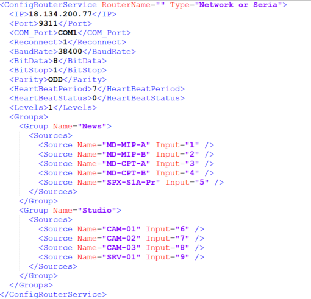
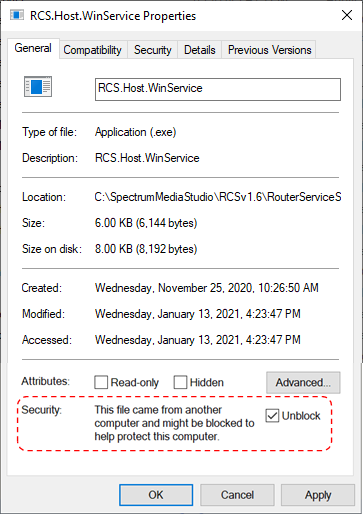
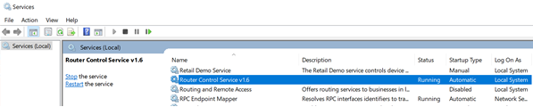
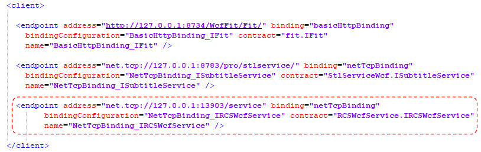

Installing Router Service
As with SMS and the FIT service, the Router service is delivered as a ZIP folder containing 3 software folders.
- C:\SMS-Router\RCSv1.6\RouterServiceConsole – Allows service to be run manually
- C:\SMS-Router\RCSv1.6\RouterServiceService – Allows service to be installed as a service
- C:\SMS-Router\RCSv1.6\WPFClient - Test framework application
From RouterServiceConsole folder:
The operator must declare the router and their inputs associated with sources.
Navigate to the App_Data\Configuration\ subfolder and edit "RouterSettings.xml" file.
Multiple groups of sources can be created and assigned to the recorders.
- <IP> : IP address of the router.
- <Port>: port of the router.
- <Reconnect>: 1=disconnect after each command, 0=stay connected. For Quartz router the controllers require a disconnect between each command sequence.
- <HeartBeatStatus>: 0=do not send heartbeat, 1=send heartbeat.
- <HeartBeatPeriod>: frequency of heartbeat.
- <Group Name>: name of the group. Each group must have a different name.
- <Source Name / Input>: name of the source and input port number. Each source must have a different name and input port.
From RouterServiceService folder:
Check properties of "RCS.Host.WinService.exe" and make sure to unblock the executable (see below).
Right click on the "_serviceInstall.bat" and run it as administrator.
Check in the Service panel that service "Router Control Service v1.6" is installed and running.
From SMS folder:
On each SMS client , point the client at the router service.
Edit "sms.exe.config" file.
In the Client section (highlighted in red), set the IP address and Port number of the server that the router service is installed on, if different than the SMS workstation.
Restart Spectrum Media Studio.